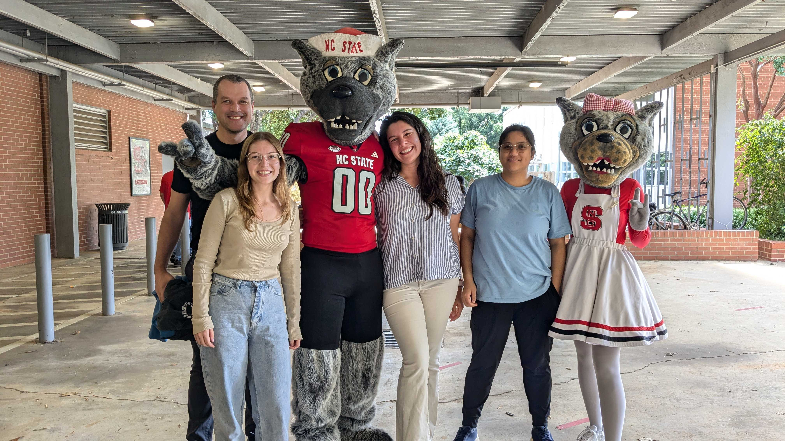

Lab Members

Summer 2022 Nursery

Celebrating 100 Years of Crop and Soil Sciences -
2024
üåΩ GEMMA lab crew
Rubén Rellán-Álvarez Principal Investigator.
Rubén is an Assistant Professor at the Biochemistry Department at CALS -
NCSU
Fausto Rodríguez Zapata Postdoc.
Fausto studies maize glycerolipid quantitative and population genetics
and genetic associations with soil variables involved in phosphorus
deficiency.
Pascual Blanco Field Technician.
Pascual joined the lab in fall 2021. He manages all our field
operations.
Lina López ORISE Field Techncian.
Lina joined in fall 2023 to work in the CERCA project in collaboration
with Jim Holland.
Carolina E. Weldt Lab Manager/Technician.
Carolina joined the lab in summer 2024.
Destiny Tyson PhD Student, Genetics Program.
Co-advised with Jim Holland.
Destiny joined the lab in Fall 2020. She is working on developing gene
editing approaches to study maize photoperiod adaptation.
Nirwan Tandukar PhD Student, Genetics Program.
Nirwan joined the lab in January 2022. He is working on the development
of approaches that use multiple genetic datasets to identify genes in
adaptation to abiotic stresses.
Hannah Pil PhD Student, Genetics Program.
Hannah joined the lab in summer 2021 as an undergraduate and since then
she has become a
master corn pollinator.
Zehta Glover PhD Student, Genetics Program.
Zehta joined the lab in December 2024. She is working on the genetic
mechanisms that drive cold stress tolerance, with an emphasis on
evolutionary diversity in maize.
Lauren Insko PhD Student, Structural and Molecular
Biochemistry Program.
Lauren joined the lab in January 2025. She is working on identifying
regulatory elements of the gene High PhosphatidylCholine 1 as
well as identifying structural elements of the phospholipase protein
product.
Isaac Fleming PhD Student, Crop Science. Co-adviced
with Alex Woodley.
Isaac joined the lab in January 2025. He is working on Biological
nitrification in maize.
Former lab members
Allison Barnes Postdoc.
Ruthie Stokes Master Student
Ryan Pil Undergraduate student
Aleya Mohammed Undergraduate student
Shannon Persaud Undergraduate student
Emily Phung Lab Technician
Heli Kavi Undergraduate student
Elohim Bello. PhD Student co-advised with Luis Herrera-Estrella.
Jessica Carcaño Administrative assistant
Jonathan Ojeda. PhD Student co-advised with Luis Herrera-Estrella.
Fabián Santa Maria Master Student co-advised with Luis Delaye
Andi Kur PhD Student. NCSU Genetics program. AgBioFews Program.
Christina Merkel Lab Tech
Patricio Cid Field Manager
Juan Estévez Wet Lab Manager
Karla Juarez Master Student
Sofía Estefany Sánchez Master Student co-advised with Ruairidh Sawers.
Vladimir Torres. Master Student co-advised with Ruairidh Sawers.
Christian Escoto. Master Student co-advised with Ruairidh Sawers.
Dario Alávez Lab Technician